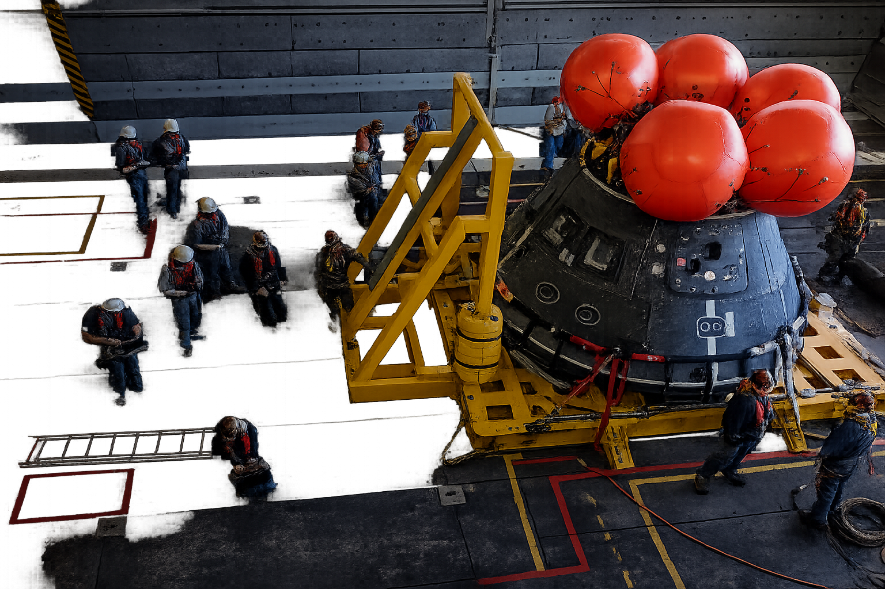
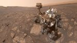
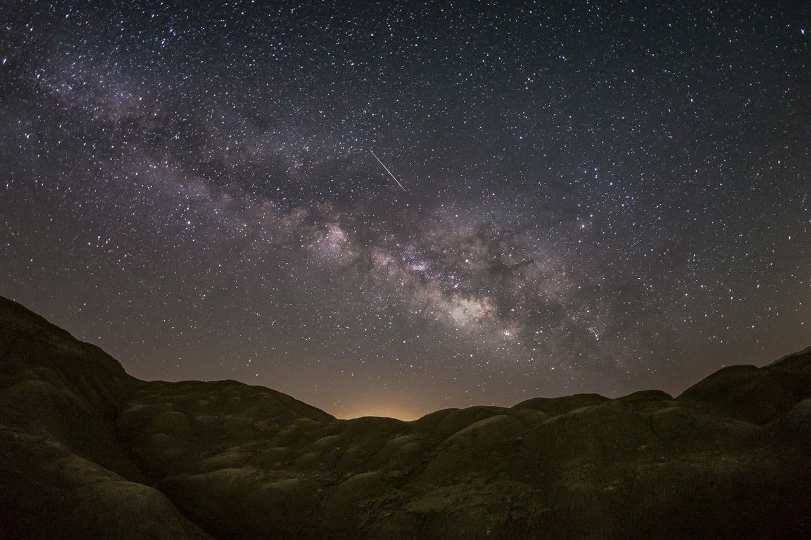
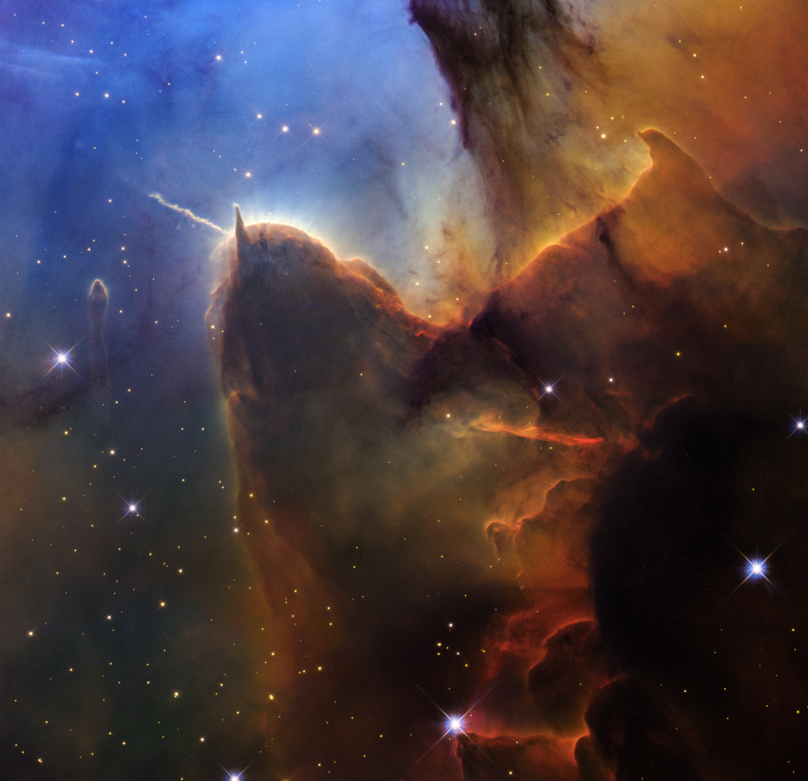

for the benefit of all
Career's at NASA
explore with us
How to Apply
inspire the world
Life at NASA
NASA force is a new hiring initiative, created with the U.S. Office of personnel management, to recruit exeptional technical talent for mission-critical roles supporting NASA's exploration, research and advanced technology work
for the benefit of all
Career's at NASA
explore with us
How to Apply
inspire the world
Life at NASA

news release
2 min read
article
2 min read
blog
3 min read
article
5 min read
3 min read
article

5 min read
article

6 min read
article

3 min read
article
When NASA’s Apollo 8 crew rounded the far side of the Moon in 1968, astronaut Bill Anders captured an image of Earth rising above the gray horizon—a photograph that quickly became a symbol of hope. Known as Earthrise, the image helped inspire the first Earth Day celebration two years later.
Explore More
Communicating with Mission
Artemis
Science Missions
Spaceships and Rockets
today
NASA celebrates Hubble’s 36th anniversary with a new image of the Trifid Nebula, a star-forming region it first captured in 1997. The telescope leveraged almost its full operational lifetime to show us changes in the nebula on human time scales with an improved camera.
browse image archive

view image